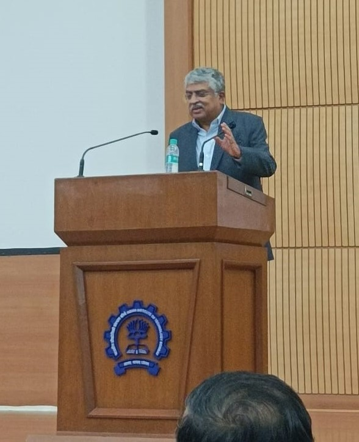

Nandan Nilekani - visit to IIT Bomaby
"I am what I am because of IIT Bombay." These were the words that echoed through the corridors of the institute as Mr. Nandan Nilekani, the distinguished co-founder and chairman of Infosys, returned to his alma mater after five decades. The momentous occasion, held on the 26th of July, was marked by a historic announcement - the Institute's main building would henceforth bear the name "Nandan Nilekani Main Building" as a tribute to his exceptional contributions.
The Tribute - Renaming of the Main Building
The Main Building, a symbol of institute’s pride, houses the offices of the Institute's functionaries and administrative staff. The decision to rename the main building was a gesture of gratitude and recognition for Mr. Nilekani's recent philanthropic act, a donation of Rs 315 crores that has breathed new life into the Institute's vision of becoming a global leader in technology and engineering. These funds will play a transformative role in improving the infrastructure, furthering academic excellence and advancing research in the institute.
Mr. Nilekani’s Address to the students
The highlight of the day for the students of IIT Bombay personally, was the interactive session with Mr. Nilekani at VMCC. The atmosphere was a buzz with enthusiasm and awe as the students sat there, inspired by the presence of Mr. Nilekani, a world renowned person who had walked the same paths that they are walking on today, has been through the same journey that they are a part of today.
In his address to the students, Mr. Nilekani spoke about the power of collaboration and inspired them to set big goals - ones that transcend individual ambitions and unify the efforts of all involved. Drawing from his own journey, he shared his initial fear of public speaking during his college days and how embracing the umpteen opportunities at IIT Bombay had helped him overcome it. He reminisced about his active involvement in college activities, including his run for the position of GSSA (General Secretary for Student Affairs) during his final year, where he had to go from hostel to hostel to give speeches, pushing himself out of his comfort zone and nurturing his leadership skills. He further highlighted his engagement with the Mood Indigo Team, where he contributed to organising the festival twice and honed his organisational and managerial prowess. He emphasised that IIT Bombay provides not only academic brilliance but also an environment that nurtures well-rounded individuals capable of tackling real-world challenges.
Talking about his vision for IIT Bombay, Mr. Nilekani states, “IIT Bombay is now at the cusp of real greatness. It is uniquely placed. It has ranked among the top 150 institutes in the world. It is one of the top institutes in India. It is the IIT of choice for JEE aspirants and everybody wants to come here. It has non-traditional opportunities with the IIT incubator and now SINE through which a lot of companies are coming up.” He firmly believes that by making significant investment in infrastructure, creating new disciplines and schools, getting more young talent here and creating a platform for their growth, IITB will be destined to really go to places.
During the interactive session, Mr. Nilekani shared with us his love for chaos, revealing how he thrives in such environments. In his belief, the person who remains calm amidst chaos is naturally positioned to emerge victorious. He stressed on the importance of strategy and urged students to break larger goals into manageable, executable tasks, emphasising on the beauty of their unification towards the completion of the one larger goal.
Mr. Nilekani's transformative journey from IIT Bombay to becoming the founding chairman of the Unique Identification Authority of India (UIDAI), where he spearheaded the groundbreaking Aadhaar initiative is inspirational. His vision resulted in the ambitious goal of providing identities to 600 million people during the project's initial phase. His work on India Stack, a digital public infrastructure that includes the revolutionary United Payments Interface (UPI), catapulted India to the forefront of the global digital payment landscape.
As the day concluded, Mr. Nilekani's words lingered in the minds of the students, filling them with a hope and a belief in endless possibilities that come with a passionate idea and a strong sense of purpose. His visit to IIT Bombay not only immortalised his name on the campus but also ignited a spark of inspiration among the students that will drive our institute towards excellence, innovation, and nation-building.